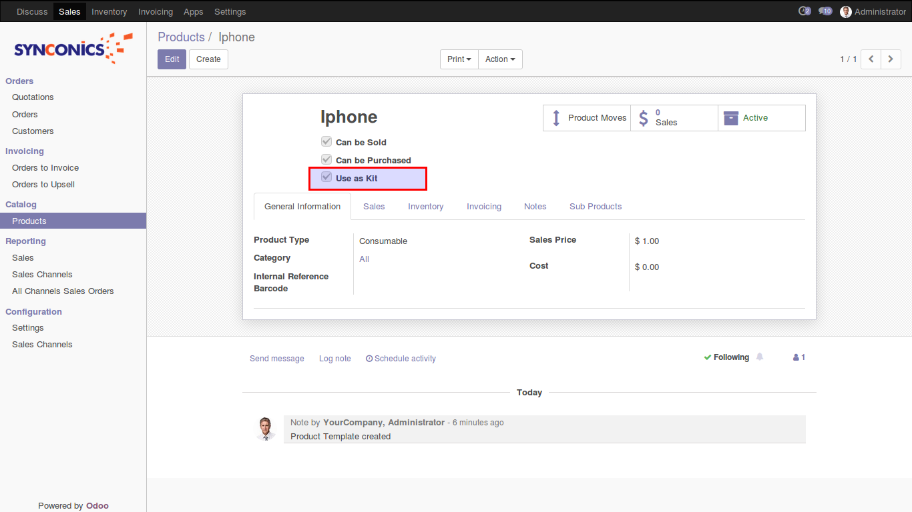

Creating Product Kit Using the Product Definition
Select the Product Kit option on the Product Definition - Definition page (Products, Identify Product Details, Definition) to identify the product ID as the parent/kit product. Kit sub products option fields appear.
